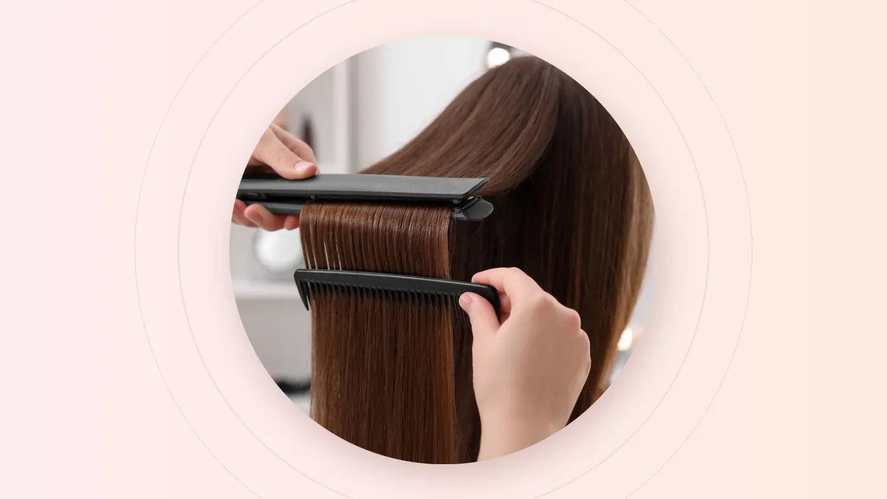

The short answer
Choose rebonding if you want pin-straight hair that stays straight until it grows out. Choose keratin if you want smoother, frizz-free hair that keeps its natural movement and fades gradually. Choose a digital perm if you want soft, bouncy waves with more volume. At On Hair Salon & Beauty, all three are listed from S$98 to S$298+, depending on your hair length and condition.
Walk into any salon in Singapore on a humid Saturday and you'll hear some version of the same question: "Should I rebond, do keratin, or perm?" All three change your hair's texture, all three take a few hours, and all three can transform how your mornings feel. But they solve different problems, and choosing the wrong one is an expensive way to learn the difference.
This guide lays them side by side: what each one does, how long it lasts, who it suits and how to look after it, so you can walk into your consultation already knowing what to ask for.
The One-Line Difference
Rebonding
Permanently straightens the treated hair. It stays straight until it grows out.
Keratin
Tames frizz and softens the hair while keeping movement. Fades gradually.
Digital perm
Creates soft, loose waves or curls that look most defined when dry.
Side-by-Side Comparison
| Compare | Rebonding | Keratin | Digital perm |
|---|---|---|---|
| The result | Pin-straight and sleek | Smooth and frizz-free, with natural movement | Soft, bouncy waves or curls |
| How it works | A chemical solution loosens the hair's internal bonds, the hair is flat-ironed straight, then a neutraliser locks the new shape in | A smoothing treatment is applied and sealed into the hair with heat | A chemical solution softens the bonds, heated rods set the curl, then a neutraliser fixes it |
| How long it lasts | Treated hair stays straight; only new growth is wavy | Fades gradually over the following months | Waves soften gradually and grow out |
| Upkeep | Root retouch as your natural texture regrows | Repeat when frizz returns | Trims and a refresh when waves drop |
| Styling time | Very little | Faster blow-drying | Scrunch, diffuse or air-dry with a curl product |
| Best for | Very frizzy, wavy or unruly hair, and people who want it straight | Frizz in humidity, without looking flat | Flat or fine hair that needs volume and shape |
| Think twice if | Your hair is bleached or already fragile, or you love volume | You want dead-straight hair | Your hair is rebonded, very damaged, or you won't style it |
| Price at On Hair | S$98 to S$298+ (with cut and treatment) | S$98 to S$298+ | S$98 to S$298+ (with cut and treatment) |
Rebonding, Up Close
Rebonding is the most dramatic of the three. It changes the internal structure of each treated strand, so hair that was wavy, puffy or unruly becomes smooth, straight and glossy, and stays that way. Rain, humidity and air-drying won't bring the waves back to the treated lengths.
The catch is the regrowth. Your natural texture keeps growing in at the root, and after a few months you'll notice the contrast. A root retouch treats only the new growth. Re-rebonding the old lengths every time is a common cause of breakage, so a careful stylist will keep the chemical away from hair that has already been straightened.
Stylist's tip: rebonding is a strong chemical service. On healthy hair, done carefully and followed with treatment, results can be beautiful. On hair that's bleached or already weak, your stylist may recommend a gentler option first. Our rebonding service is priced as a package with a cut and treatment, so aftercare support is built in.
Keratin, Up Close
Keratin treatment is the diplomat of the group. Instead of permanently reshaping your hair, it smooths and seals the surface, so strands absorb less moisture from the air and frizz calms down dramatically. Your hair keeps some natural body and movement, and blow-drying becomes noticeably faster.
Because it works on the surface, keratin fades gradually over the following months, especially with frequent washing, swimming and harsh shampoos. There's no sharp regrowth line, so it grows out gracefully. It's often the best answer for people who say "I don't want straight hair, I just want it to behave."
Why Singapore loves keratin: frizz happens when hair absorbs moisture from humid air unevenly. Keratin tackles that directly, which is why it's so popular here even with people whose hair isn't especially curly.
Digital Perm, Up Close
A digital perm (sometimes called a hot perm) uses heated rods to set the curl. The result is softer and looser than a traditional cold perm, and here's the key difference: a digital perm looks most defined when your hair is dry, while a cold perm looks curliest when wet. That makes digital perms ideal for the effortless, wavy look popular across Asia.
It's a brilliant way to give fine, flat hair lift and movement. Your waves still need a little love: a curl cream, a gentle scrunch and a diffuser or air-dry. If you'd prefer a springier curl or a smaller budget, our regular Perm, Cut and Treatment is listed from S$78 to S$168+.
Rebonding changes what your hair is. Keratin changes how it behaves. A digital perm changes where it moves.
Five Questions to Help You Decide
- Do you want straighter hair, or curlier hair? Curlier points to a digital perm. Straighter narrows it to rebonding or keratin.
- Do you want pin-straight, or just smooth? Pin-straight and sleek means rebonding. Smooth with natural movement means keratin.
- How much time do you spend styling each morning? Almost none favours rebonding. A few minutes of blow-drying suits keratin. Happy to scrunch and diffuse? A digital perm will reward you.
- What has your hair been through? Bleached, recently rebonded or fragile hair may rule some options out. Tell your stylist everything.
- How often can you come back? Rebonding needs root retouches, keratin needs repeating when frizz returns, and perms need refreshing as waves soften.
Can You Combine Them?
- Rebonding and a perm on the same hair: generally not recommended. Both reshape the hair's internal bonds, and layering them on the same lengths risks serious damage.
- Colour and rebonding: possible, but usually spaced apart, commonly rebonding first and colouring later. Your stylist will advise the safest order.
- Keratin on coloured hair: often a good match, since smoothing can make colour look glossier. Mention your colour history at consultation.
- Rebonded roots with a softer end: some people prefer a rebond with slightly curved ends for a natural look. Ask your stylist what's possible for your hair.
Aftercare Cheat Sheet
After rebonding
Keep hair straight and loose: no washing, tying, clipping or tucking behind the ears. Then use a gentle, sulfate-free shampoo and keep up regular treatments.
After keratin
Some formulas need a waiting period before washing, so ask your stylist. Use sulfate-free care and rinse after swimming to help the smoothing last.
After a digital perm
Hold off washing, then scrunch in a curl cream, diffuse or air-dry, and avoid brushing curls when dry. A wide-tooth comb on damp hair keeps waves intact.
What Affects the Price
All three services at On Hair Salon & Beauty are listed as ranges, and the final price is confirmed after consultation, before we start:
| Service | Listed price |
|---|---|
| Rebonding, Cut and Treatment | S$98 to S$298+ |
| Keratin Treatment | S$98 to S$298+ |
| Digital Perm, Cut and Treatment | S$98 to S$298+ |
| Perm, Cut and Treatment | S$78 to S$168+ |
Where you land in the range depends mainly on hair length, thickness, condition and how much product your hair needs. Longer, denser hair takes more time and product. Limited-time promotions on our homepage, such as Rebonding and Keratin from S$98++, may also apply while they last, so check with your outlet when you book.
Frequently Asked Questions
Which lasts longest: rebonding, keratin or a digital perm?
Rebonding. The treated hair stays straight until it grows out, so only the new growth needs retouching. Keratin fades gradually over the following months, and digital perm waves soften over time.
Is rebonding bad for your hair?
Rebonding is a strong chemical process, so the condition of your hair and the care afterwards matter. On healthy hair, with only the regrowth retouched and regular treatments, many people keep their hair in good shape. It isn't recommended for hair that is bleached or already very fragile.
Can I get keratin after rebonding?
Often, yes. Keratin can help smooth the regrowth area or add softness to the lengths, but your stylist will check your hair first and advise on timing.
Can I perm hair that has been rebonded?
Generally not on the rebonded lengths, because both services reshape the same internal bonds. Once the rebonded hair has grown out or been cut off, a perm becomes an option again.
Which is best for frizzy hair in Singapore's humidity?
If you want to keep natural movement, keratin is usually the answer. If you want frizz gone for good and prefer straight hair, rebonding is the long-lasting choice. A consultation helps match the service to your hair.
Final Thoughts
There's no universally "best" option, only the one that fits your hair, your mornings and your maintenance budget. Want it straight and done? Rebond. Want it calm but still yours? Keratin. Want movement and volume? Digital perm. If you're still torn, that's exactly what a consultation is for.
Not sure which one your hair can handle? Send your nearest outlet a photo in natural light and a quick note on your hair history. The team can point you in the right direction before you book.